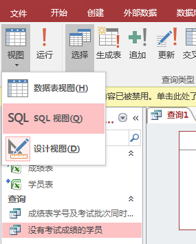
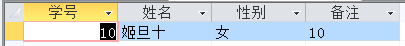

Excel 与 Access
简介
记录Excel的操作教程和利用Office带的Access辅助Excel的操作。
有些功能在Excel操作比较麻烦可以借助Access更简单更快速的实现这些功能，此文档的内容是挑选过的，挑选内容为access的知识中，基本、不难、好记能满足大部分功能需求的知识。
有些功能在Excel操作比较麻烦可以借助Access更简单更快速的实现这些功能，此文档的内容是挑选过的，挑选内容为access的知识中，基本、不难、好记能满足大部分功能需求的知识。
导入表
为了举例说明，在此我们在F盘下建立一个叫"access练习"的文件夹，在此建立1个excel文件，命名为"原.xlsx"，在其中建立2个表，如下图:


为了便于练习，数据表的数据如下:
第1步:现打开Access新建一空白数据库文件，选择"空白桌面数据库"如图:
第2步:弹出一对话框，点击右侧的那个文件夹图标，将access文件存放的路径放在F盘的"access练习"文件夹下，并取名叫"查询库.accdb"，如图:
 第3步:点击"创建"，我们创建里一个空的access文件，如图:
第4步:接着开始导入数据，点击上部的"外部数据"标签按钮，如图:
第5步:点击Excel图标，弹出窗口后右侧的"选择(R)..."按钮选择"F://access练习//原.xlsx"文件，在下面选择"通过创建链接表来链接到数据源"，如图:
第3步:点击"创建"，我们创建里一个空的access文件，如图:
第4步:接着开始导入数据，点击上部的"外部数据"标签按钮，如图:
第5步:点击Excel图标，弹出窗口后右侧的"选择(R)..."按钮选择"F://access练习//原.xlsx"文件，在下面选择"通过创建链接表来链接到数据源"，如图:
 第6步:点击"确定"按钮，此时默认选择的是"学员表"，点击"下一步"按钮，在新的弹窗中单击选中"第一行包含列标题(I)"，再次点击"下一步"按钮，又换了一个新弹窗，此时可以设置导入的表的名称，默认是"学员表"所以不用改了直接点击"完成"按钮。
第6步:点击"确定"按钮，此时默认选择的是"学员表"，点击"下一步"按钮，在新的弹窗中单击选中"第一行包含列标题(I)"，再次点击"下一步"按钮，又换了一个新弹窗，此时可以设置导入的表的名称，默认是"学员表"所以不用改了直接点击"完成"按钮。
第7步:按照上面的第4步、第5步、第6步将"成绩表"导入。
第8步:右键单击右边的"表1"，点击"关闭"按钮，关闭表1，此时左侧的"表1"也没了(此步骤非必须，只是为了减少界面的干扰)。
至此数据导入已经完成，后续的功能说明均基于此示例表述。
示例文件附件: 原.xlsx
查询库.accdb
图2_1
图2_2
为了便于练习，数据表的数据如下:
| 学号 | 姓名 | 性别 | 备注 |
|---|---|---|---|
| 1 | 姬旦一 | 男 | a |
| 2 | 王旦二 | 女 | b |
| 3 | 王旦三 | 男 | c |
| 4 | 王旦四 | 女 | d |
| 5 | 姬旦五 | 男 | 5 |
| 6 | 姬旦六 | 女 | f |
| 7 | 赵旦七 | 男 | g |
| 8 | 诸葛老八 | 女 | 8 |
| 9 | 姬旦九 | 男 | 9 |
| 10 | 姬旦十 | 女 | 10 |
| 学号 | 考试批次 | 语文 | 数学 | 物理 |
|---|---|---|---|---|
| 5 | 1 | 20 | 80 | 90 |
| 6 | 1 | 100 | 40 | 10 |
| 3 | 1 | 20 | 80 | 90 |
| 2 | 2 | 20 | 80 | 90 |
| 1 | 1 | 20 | 80 | 90 |
| 5 | 1 | 20 | 80 | 90 |
| 7 | 3 | 70 | 70 | 70 |
| 5 | 1 | 20 | 80 | 90 |
| 8 | 1 | 20 | 80 | 90 |
| 5 | 6 | 20 | 80 | 90 |
| 5 | 1 | 20 | 80 | 90 |
| 8 | 1 | 20 | 80 | 90 |
| 5 | 1 | 20 | 80 | 90 |
| 9 | 5 | 80 | 80 | 90 |
第1步:现打开Access新建一空白数据库文件，选择"空白桌面数据库"如图:
图2_3
图2_4
图2_5
图2_6
图2_6
第7步:按照上面的第4步、第5步、第6步将"成绩表"导入。
第8步:右键单击右边的"表1"，点击"关闭"按钮，关闭表1，此时左侧的"表1"也没了(此步骤非必须，只是为了减少界面的干扰)。
至此数据导入已经完成，后续的功能说明均基于此示例表述。
示例文件附件: 原.xlsx
查询库.accdb
查重
查重，其实有许多不同的查重的情况，在此只说明一种access内置的查重功能。
指定某几个字段(字段，例如"学号"这列，更近一步讲，前面的"导入表"小结中的学生表里的第一行即第一条记录，该条记录里的1便是该条记录的"学号"字段的值)。
例如查询"成绩表"里谁的"考试批次"重复了，即"学号"与"考试批次"这两个字段的值同时重复了，现举例说明:
第1步:点击上部的"创建"标签按钮，如图:
 第2步:在弹出的窗口中选择"查找重复项查询向导"，点击"确定"按钮，如图:
第2步:在弹出的窗口中选择"查找重复项查询向导"，点击"确定"按钮，如图:
 第3步:在此可以选择要查重的表，我们要对"成绩表"查重，因为默认选的就是该表所以直接选择"下一步"按钮，如图:
第4步:在此选择对那些字段的值进行查重，我们要找出"学号"与"考试批次"的值同时重复的记录，我们将这两个字段放到右侧，然后点击"下一步"按钮，如图:
第3步:在此可以选择要查重的表，我们要对"成绩表"查重，因为默认选的就是该表所以直接选择"下一步"按钮，如图:
第4步:在此选择对那些字段的值进行查重，我们要找出"学号"与"考试批次"的值同时重复的记录，我们将这两个字段放到右侧，然后点击"下一步"按钮，如图:
 第5步:此时可以选择除了查重的字段之外还要显示的字段，我们可以都选上，然后选择"下一步"按钮，如图:
第5步:此时可以选择除了查重的字段之外还要显示的字段，我们可以都选上，然后选择"下一步"按钮，如图:
 第6步:此时可以指定查询结果的名称，我们修改该名称为"成绩表学号及考试批次同时重复项"然后选择"完成"按钮，如图:
第6步:此时可以指定查询结果的名称，我们修改该名称为"成绩表学号及考试批次同时重复项"然后选择"完成"按钮，如图:
 此时显示查重结果，如图:
此时显示查重结果，如图:
 该查询结果在access中称为查询，查询也叫视图，视图不是表，视图是对表或视图在指定条件下的查询结果。
该查询结果在access中称为查询，查询也叫视图，视图不是表，视图是对表或视图在指定条件下的查询结果。
上面的第3步图3_3中有一个标有视图的框，有3个选项：表、查询、两者，表就是原本的数据表本例中为"学员表"和"成绩表"，我们本例中创建的就是一个查询也叫视图，当我们再创建新的视图时可以将该视图作为数据源进行查询操作。
例如本例中如果修改了"成绩表"中的数据，当我们再次打开查看查询结果时，结果会自动更改，不用重复上述操作，但操作时有些步骤要注意现再说明一下：
第7步:右键点击刚才打开的视图，点击弹出菜单中的"关闭"按钮，关闭此视图的显示，这点要注意，若不先关闭的话直接在原数据表中修改数据该视图的内容不会变化，需要先关闭一下在重新打开才能刷新结果，如图:
第8步:我们打开导入数据的那个excel文件修改"成绩表"在，添加一行数据，例如添加学号为7，考试批次为3，各科成绩都是20的一行，然后存盘，如图:
 第9步:双击左侧的"成绩表学号及考试批次同时重复项"视图，右侧便打开该视图并显示新的查询结果，如图:
第9步:双击左侧的"成绩表学号及考试批次同时重复项"视图，右侧便打开该视图并显示新的查询结果，如图:
 我们看到多出来两行，我用红线标了一下，如图:
我们看到多出来两行，我用红线标了一下，如图:
 为了便于后面的说明，将该视图关闭再将刚才添加的数据从excel文件中删除。
为了便于后面的说明，将该视图关闭再将刚才添加的数据从excel文件中删除。
指定某几个字段(字段，例如"学号"这列，更近一步讲，前面的"导入表"小结中的学生表里的第一行即第一条记录，该条记录里的1便是该条记录的"学号"字段的值)。
例如查询"成绩表"里谁的"考试批次"重复了，即"学号"与"考试批次"这两个字段的值同时重复了，现举例说明:
第1步:点击上部的"创建"标签按钮，如图:
图3_1
图3_2
图3_3
图3_4
图3_5
图3_6
图3_7
上面的第3步图3_3中有一个标有视图的框，有3个选项：表、查询、两者，表就是原本的数据表本例中为"学员表"和"成绩表"，我们本例中创建的就是一个查询也叫视图，当我们再创建新的视图时可以将该视图作为数据源进行查询操作。
例如本例中如果修改了"成绩表"中的数据，当我们再次打开查看查询结果时，结果会自动更改，不用重复上述操作，但操作时有些步骤要注意现再说明一下：
第7步:右键点击刚才打开的视图，点击弹出菜单中的"关闭"按钮，关闭此视图的显示，这点要注意，若不先关闭的话直接在原数据表中修改数据该视图的内容不会变化，需要先关闭一下在重新打开才能刷新结果，如图:
图3_8
图3_9
图3_9
图3_9
差集
该表中的数据在另一个表中不存在
例如查询"学员表"中谁没有考试成绩，即在"学员表"的学号在"成绩表"没有该"学号"的记录，现举例说明:
第1步:点击上部的"创建"标签按钮，如图:
 第2步:在弹出的窗口中选择"查找不匹配项查询向导"，点击"确定"按钮，如图:
第3步:选择"学员表"，点击"下一步"按钮，如图:
第2步:在弹出的窗口中选择"查找不匹配项查询向导"，点击"确定"按钮，如图:
第3步:选择"学员表"，点击"下一步"按钮，如图:
 第4步:选择"成绩表"，点击"下一步"按钮，如图:
第4步:选择"成绩表"，点击"下一步"按钮，如图:
 第5步:点击中间的按钮是两个表的"学号"字段作为比较条件字段，点击"下一步"按钮，如图:
第6步:此时可以选择除了比较条件字段之外还要显示的字段，我们可以都选上，然后选择"下一步"按钮，如图:
第7步:此时可以指定查询结果的名称，我们修改该名称为"没有考试成绩的学员"然后选择"完成"按钮，如图:
结果如图:
第5步:点击中间的按钮是两个表的"学号"字段作为比较条件字段，点击"下一步"按钮，如图:
第6步:此时可以选择除了比较条件字段之外还要显示的字段，我们可以都选上，然后选择"下一步"按钮，如图:
第7步:此时可以指定查询结果的名称，我们修改该名称为"没有考试成绩的学员"然后选择"完成"按钮，如图:
结果如图:
例如查询"学员表"中谁没有考试成绩，即在"学员表"的学号在"成绩表"没有该"学号"的记录，现举例说明:
第1步:点击上部的"创建"标签按钮，如图:
图4_1
图4_2
图4_3
图4_4
图4_5
图4_6
图4_7
图4_8
表关联
将多个表符合条件的记录关联显示
举例:将"学员表"中的'姓名'、'性别'、'备注'信息显示到"成绩表"中对应的记录上, 通过'学号'来关联, 数据表参考左侧目录中的""中导入的数据, 效果如下图5_1:
 首先选择上部工具栏中的"创建"->"查询设计", 如下图5_2:
首先选择上部工具栏中的"创建"->"查询设计", 如下图5_2:
 点击后效果如下图5_3:
点击后效果如下图5_3:
 若没有名为"显示表"的弹窗, 如下图5_4:
则选择上部工具栏中的"设计"->"显示表"来打开"显示表"窗口, 如下图5_5:
若没有名为"显示表"的弹窗, 如下图5_4:
则选择上部工具栏中的"设计"->"显示表"来打开"显示表"窗口, 如下图5_5:
 点击"学员表"点击"添加"按钮, 再"成绩表"点击"添加"按钮, 将两个表添加进来, 如下图5_6:
点击"学员表"点击"添加"按钮, 再"成绩表"点击"添加"按钮, 将两个表添加进来, 如下图5_6:
 点击"关闭"按钮关闭"显示表"窗口, 在任意一个表中的'学号'字段上用鼠标左键按下不松开, 然后将鼠标移动到另一个表中的'学号'字段上, 效果如下图5_7:
点击"关闭"按钮关闭"显示表"窗口, 在任意一个表中的'学号'字段上用鼠标左键按下不松开, 然后将鼠标移动到另一个表中的'学号'字段上, 效果如下图5_7:
 这样两个表会匹配'学号'字段的值一样的记录, 关联条件设置好后来设置如何显示, 在下面的表格中设置如何显示, 可以一个一个字段设置, 我们省点事, 直接选择带*号的,
'学员表.*'表示"学员表"中的所有字段, '成绩表.*'表示"学员表"中的所有字段, 效果如下图5_8:
这样两个表会匹配'学号'字段的值一样的记录, 关联条件设置好后来设置如何显示, 在下面的表格中设置如何显示, 可以一个一个字段设置, 我们省点事, 直接选择带*号的,
'学员表.*'表示"学员表"中的所有字段, '成绩表.*'表示"学员表"中的所有字段, 效果如下图5_8:
 选择上部工具栏中的"设计"->"运行", 来查看查询结果, 如下图5_9:
选择上部工具栏中的"设计"->"运行", 来查看查询结果, 如下图5_9:
 此时显示查询结果, 下面将查询保存, 用鼠标右键"查询1", 弹出菜单, 如下图5_10:
此时显示查询结果, 下面将查询保存, 用鼠标右键"查询1", 弹出菜单, 如下图5_10:
 选择"保存"按钮, 然后会弹出一个弹窗用来输入查询的名称, 这里取名为"表关联查询", 效果如下图5_1:
选择"保存"按钮, 然后会弹出一个弹窗用来输入查询的名称, 这里取名为"表关联查询", 效果如下图5_1:
举例:将"学员表"中的'姓名'、'性别'、'备注'信息显示到"成绩表"中对应的记录上, 通过'学号'来关联, 数据表参考左侧目录中的""中导入的数据, 效果如下图5_1:
图5_1
图5_2
图5_3
图5_4
图5_5
图5_6
图5_7
图5_8
图5_9
图5_10
图5_1
SQL比较查询
SQL即结构化查询语言, 在此我们可以理解为按照某种格式书写的可操作数据的文本。通过一个例子初步接触SQL。用SQL实现对一个表的比较条件查询。
举例1:创建一个查询来显示"学员表"中所有的女学员。
许多之前有过的操作及图片再此及之后不再描述, 若忘了可参看前面的内容。
首先选择上部工具栏中的"创建"->"查询设计"。
添加"学员表", 然后再下面选择显示列的表格中添加'学员表.*'。
现在要进入SQL编辑模式, 有两种方式:
第一种方式, 右键点击主内容区域上的"查询1"标签, 列出一个菜单, 如下图6_1:
选择SQL视图, 进入SQL编辑模式, 如下图6_2:
文本内容如下:
在 ; 之前输入enter键加个换行并输入 where 性别="女" 注意这里的双引号是英文的, 文本都要用双引号括起来, 如下图6_4:
文本内容如下:
来查看查询结果, 如下图6_6:
现结合本例说明其含义。
第一行开头是一个关键字(SQL中预留的单词, 具有特定的用途, 且关键字不区分大小写) SELECT , 这个 select 表明这是一个查询语句, 在这之后是一个空格, 以分开后面的文本, 再之后是 学员表.* 说明要显示哪些列, * 表示全部的列, 学员表.* 表示成绩表中的全部列,
第二行开头是一个关键字 FROM 跟一个空格, 用于标识结束前面的列名并开始后面的数据来源列表, 然后是 学员表 , 表明数据来源是 学员表
第三行开头是一个关键字 where , 用于标识结束前面的来源列表并开始后面的筛选条件列表, 然后跟一个空格, 后面是条件性别等于女, 最后跟一个 ; 标识语句结束, 只有一条SQL时 ; 省略不写也可以, 若没有此行则表示查学员表的全表。
这里用了三行主要是为了看着结构清晰, 也可以写在一行上, 在第二行和第三行前加个空格即可。
现在再来回顾一下SQL查询语句的结构:
然后是查询还要确定数据要显示哪些列,
之后还要确定数据是从哪些表中来的, 所以有一个 from 来标识后面写的是表名,
再之后还要确定数据查询的条件, 所以有一个 where 来标识后面写的是表名查询条件。
前面的表名也可以是查询, 即我们创建的查询, 也就是我们可以在之前的查询结果之上再建立新的查询。
在条件中除等号外还有别的符号, 下面列出(比较时对数值可以进行加+、减-、乘*、除\、取余mod):
= 表示相同, 可比较文本及数值、
<> 表示不相同, 可比较文本及数值, SELECT * FROM 成绩表 where 语文 - 数学 <> 0; 语文成绩不等于数学成绩, 效果如下图6_7:、
< 表示小于, 可比较数值, SELECT * FROM 成绩表 where 数学 \ 60 < 1; 数学小于60, 效果如下图6_8:、
<= 表示小于等于, 可比较数值, SELECT * FROM 学员表 where 学号 mod 2 <= 0; 学号为偶数的学员, 效果如下图6_9:、
> 表示大于, 可比较数值, SELECT * FROM 成绩表 where 语文 + 数学 + 物理 > 210; 语文数学物理的和大于210, 效果如下图6_10:、
>= 表示大于等于, 可比较数值, SELECT * FROM 成绩表 where 语文 + 数学 + 物理 >= 210; 语文数学物理的和大于等于210, 效果如下图6_11:、
举例1:创建一个查询来显示"学员表"中所有的女学员。
许多之前有过的操作及图片再此及之后不再描述, 若忘了可参看前面的内容。
首先选择上部工具栏中的"创建"->"查询设计"。
添加"学员表", 然后再下面选择显示列的表格中添加'学员表.*'。
现在要进入SQL编辑模式, 有两种方式:
第一种方式, 右键点击主内容区域上的"查询1"标签, 列出一个菜单, 如下图6_1:
图6_1
图6_2
SELECT 学员表.*
FROM 学员表;
第二种方式, 点击上部工具栏中的"设计"->"视图"列出一个菜单, 如下图6_3:
FROM 学员表;

同样点击SQL视图, 进入SQL编辑模式, 效果如前面的图6_2。
图6_3
在 ; 之前输入enter键加个换行并输入 where 性别="女" 注意这里的双引号是英文的, 文本都要用双引号括起来, 如下图6_4:
图6_4
SELECT 学员表.*
FROM 学员表
where 性别='女';
现在点击上部工具栏中的"设计"->"运行"按钮, 如下图6_5:
FROM 学员表
where 性别='女';
图6_5
图6_6
第一行开头是一个关键字(SQL中预留的单词, 具有特定的用途, 且关键字不区分大小写) SELECT , 这个 select 表明这是一个查询语句, 在这之后是一个空格, 以分开后面的文本, 再之后是 学员表.* 说明要显示哪些列, * 表示全部的列, 学员表.* 表示成绩表中的全部列,
第二行开头是一个关键字 FROM 跟一个空格, 用于标识结束前面的列名并开始后面的数据来源列表, 然后是 学员表 , 表明数据来源是 学员表
第三行开头是一个关键字 where , 用于标识结束前面的来源列表并开始后面的筛选条件列表, 然后跟一个空格, 后面是条件性别等于女, 最后跟一个 ; 标识语句结束, 只有一条SQL时 ; 省略不写也可以, 若没有此行则表示查学员表的全表。
这里用了三行主要是为了看着结构清晰, 也可以写在一行上, 在第二行和第三行前加个空格即可。
现在再来回顾一下SQL查询语句的结构:
select 要显示的列的列名(如:列名1, 列名2, ..., 列名n 中间用逗号隔开, 注意是英文的逗号, 中英文的逗号不一样)
from 表名(有多个表时用逗号隔开)
where 条件(可以没有条件)
可以这样来理解，我们要查询数据所以要先确定对数据操作的种类是查询, 所以开头是select 表名是查询操作,
from 表名(有多个表时用逗号隔开)
where 条件(可以没有条件)
然后是查询还要确定数据要显示哪些列,
之后还要确定数据是从哪些表中来的, 所以有一个 from 来标识后面写的是表名,
再之后还要确定数据查询的条件, 所以有一个 where 来标识后面写的是表名查询条件。
前面的表名也可以是查询, 即我们创建的查询, 也就是我们可以在之前的查询结果之上再建立新的查询。
在条件中除等号外还有别的符号, 下面列出(比较时对数值可以进行加+、减-、乘*、除\、取余mod):
= 表示相同, 可比较文本及数值、
<> 表示不相同, 可比较文本及数值, SELECT * FROM 成绩表 where 语文 - 数学 <> 0; 语文成绩不等于数学成绩, 效果如下图6_7:、
图6_7
图6_8
图6_9
图6_10
图6_11
SQL模糊查询
举例1:查询"学员表"中所有姓王的学员学号及姓名。SQL如下:
SELECT 学号, 姓名 AS 姓王的
FROM 学员表
WHERE 姓名 Like '王*';
效果如下图7_1:
第一行的 学号, 姓名 AS 姓王的 是要显示的列的列表, 用英文状态下的逗号分隔,
其中的 姓名 AS 姓王的 表示显示 姓名 这列的信息, 但在显示时给 姓名 换了个别称, 这样该列的标题显示为 姓王的 , 这里的 AS 是个关键字用于标识后面是别称。
第三行的 姓名 Like '王*' 里的 Like 是个关键字, 表明要进行模糊查询, '王*' 表明头一个字符是 王 , 后面的星号用于匹配任意长度的任意字符, 也就是其名字只要第一个字是王字, 后面无论有几个字、字是什么都符合条件。
举例2:查询"学员表"中所有姓名长度是四个字的学员。SQL如下:
SELECT *
FROM 学员表
WHERE 姓名 Like '????';
效果如下图7_2:
 第三行的 '????' 匹配四个任意字符, 每一个问号匹配一个任意字符。
第三行的 '????' 匹配四个任意字符, 每一个问号匹配一个任意字符。
举例3:查询"学员表"中所有备注是两位数字的学员。SQL如下:
SELECT *
FROM 学员表
WHERE 备注 like '##';
效果如下图7_3:
SELECT 学号, 姓名 AS 姓王的
FROM 学员表
WHERE 姓名 Like '王*';
效果如下图7_1:
图7_1
其中的 姓名 AS 姓王的 表示显示 姓名 这列的信息, 但在显示时给 姓名 换了个别称, 这样该列的标题显示为 姓王的 , 这里的 AS 是个关键字用于标识后面是别称。
第三行的 姓名 Like '王*' 里的 Like 是个关键字, 表明要进行模糊查询, '王*' 表明头一个字符是 王 , 后面的星号用于匹配任意长度的任意字符, 也就是其名字只要第一个字是王字, 后面无论有几个字、字是什么都符合条件。
举例2:查询"学员表"中所有姓名长度是四个字的学员。SQL如下:
SELECT *
FROM 学员表
WHERE 姓名 Like '????';
效果如下图7_2:
图7_2
举例3:查询"学员表"中所有备注是两位数字的学员。SQL如下:
SELECT *
FROM 学员表
WHERE 备注 like '##';
效果如下图7_3:

第三行的 '##' 匹配两位数字, 每一个井号匹配一位数字。
图7_3
SQL条件组合
查询条件也可组合使用。
举例1:查询"学员表"中所有姓王的男学员。
第三行中的 and 是个关键字, 表明要同时满足左右两侧的条件, 相当于 且 的意思, 也称为 逻辑与。
举例2:查询"学员表"中所有姓王的和姓赵的学员。
 第三行中的 and 是个关键字, 表明满足左右两侧的条件中的一个即可, 相当于 或 的意思, 也称为 逻辑或。
第三行中的 and 是个关键字, 表明满足左右两侧的条件中的一个即可, 相当于 或 的意思, 也称为 逻辑或。
举例3:查询"学员表"中所有不姓王的学员。
第三行中的 not 是个关键字, 表明不满足后面的条件即可, 相当于 非 的意思, 也称为 逻辑非。
举例4:查询"成绩表"中语文和数学一门大于60一门不大于60的记录。
 第三行中的 xor 是个关键字, 表明左右两侧的条件一个满足一个不满足。
第三行中的 xor 是个关键字, 表明左右两侧的条件一个满足一个不满足。
举例5:查询"学员表"中姓姬的男学员和姓王的女学员还有学号为10的学员
第三行中的括号类似加减乘除中的括号, 先组合, 括号之内还可以再套括号, 内层的优先。先组合姓姬的与男性条件, 记为组合1, 再组合姓王的与女性条件, 记为组合2, 再将组合1与组合2做或组合, 最后再与学号等于10做或组合。
举例1:查询"学员表"中所有姓王的男学员。
SELECT *
FROM 学员表
WHERE 性别='男' and 姓名 like '王*';
效果如下图8_1:
FROM 学员表
WHERE 性别='男' and 姓名 like '王*';
图8_1
举例2:查询"学员表"中所有姓王的和姓赵的学员。
SELECT *
FROM 学员表
WHERE 姓名 like '王*' or 姓名 like '赵*';
效果如下图8_2:
FROM 学员表
WHERE 姓名 like '王*' or 姓名 like '赵*';
图8_2
举例3:查询"学员表"中所有不姓王的学员。
SELECT *
FROM 学员表
WHERE 姓名 not like '王*';
效果如下图8_3:
FROM 学员表
WHERE 姓名 not like '王*';
图8_3
举例4:查询"成绩表"中语文和数学一门大于60一门不大于60的记录。
SELECT *
FROM 成绩表
where 语文 > 60 xor 数学 > 60;
效果如下图8_4:
FROM 成绩表
where 语文 > 60 xor 数学 > 60;
图8_4
举例5:查询"学员表"中姓姬的男学员和姓王的女学员还有学号为10的学员
SELECT *
FROM 学员表
where (姓名 like '姬*' and 性别='男') or (姓名 like '王*' and 性别='女') or 学号=10;
效果如下图8_5:
FROM 学员表
where (姓名 like '姬*' and 性别='男') or (姓名 like '王*' and 性别='女') or 学号=10;
图8_5
SQL排序
查询结果还可以排序。
举例1:将"成绩表"先按数学降序, 再物理升序, 最后按语文升序, 进行排序。
第四行开头是两个关键字 order by 跟一个空格, 用于标识开始后面的排序列表用逗号分隔, 然后是 数学 desc , 表明将数学这列降序排序, 物理 asc, 语文 asc 然后将所有数学这列值相同的记录按照物理这列升序, 同理将语文这列升序。
举例1:将"成绩表"先按数学降序, 再物理升序, 最后按语文升序, 进行排序。
SELECT *
FROM 成绩表
where 学号 <> 5
order by 数学 desc, 物理 asc, 语文 asc;
效果如下图9_1:
FROM 成绩表
where 学号 <> 5
order by 数学 desc, 物理 asc, 语文 asc;
图9_1
SQL实现表关联
用SQL重新实现前面的表关联, 将多个表符合条件的记录关联显示
举例:将"学员表"中的'姓名'、'性别'、'备注'信息显示到"成绩表"中对应的记录上, 通过'学号'来关联。
第一行的每个要显示的列前面有一个字母和一个点, 这个字母是表的别名, 点分隔表名与列名, 表名可以用别名是为了可以少写几个字, b.姓名 表示 学员表 下的 姓名 这列。
第二行的 成绩表 as a, 是给 成绩表 起一个别名为 a, 这样在别的部分可以用 a 代替 成绩表, 可以少写许多字。 第三行的 a.学号 = b.学号 与第一行的情况相同, 表名别称跟点再跟列名, 即 成绩表 下的 学号 与 学员表 下的 学号 相同的记录。
举例:将"学员表"中的'姓名'、'性别'、'备注'信息显示到"成绩表"中对应的记录上, 通过'学号'来关联。
SELECT b.姓名, b.性别, b.备注, a.*
FROM 成绩表 as a, 学员表 as b
where a.学号 = b.学号
效果如下图10_1:
FROM 成绩表 as a, 学员表 as b
where a.学号 = b.学号
图10_1
第二行的 成绩表 as a, 是给 成绩表 起一个别名为 a, 这样在别的部分可以用 a 代替 成绩表, 可以少写许多字。 第三行的 a.学号 = b.学号 与第一行的情况相同, 表名别称跟点再跟列名, 即 成绩表 下的 学号 与 学员表 下的 学号 相同的记录。
SQL去重查询
去除重复的行
举例:显示所有参加过考试的学员信息, 思路是先将 成绩表 与 学员表 按学号关联起来, 筛选出符合条件的记录再去除重复的。
第一行的 SELECT 后面多了一个 distinct 这是一个关键字, 用于去除表中重复的内容, 如在查询结果中有多条一样的记录则只保留一条。
举例:显示所有参加过考试的学员信息, 思路是先将 成绩表 与 学员表 按学号关联起来, 筛选出符合条件的记录再去除重复的。
SELECT distinct b.*
FROM 成绩表 as a, 学员表 as b
where a.学号 = b.学号
效果如下图11_1:
FROM 成绩表 as a, 学员表 as b
where a.学号 = b.学号
图11_1
SQL分组查询
分组, 按组操作
举例1:查询参加过考试的学员每个考试批次考了几次。
第一行的 count(1) 是一个计数函数, 每条累积加1, 由SQL执行环境提供, 注意这列没有标题所以用别名的方式指定了一个。
第三行的 where 1=1 可以省略, 写在这里只是为了表明当 where 和后面的 group by 都有时, 它们的前后顺序。
第四行开头是两个关键字 group by 跟一个空格, 用于标识开始后面的分组列表用逗号分隔, 再后面的 学号, 考试批次 表示将 学号 和 考试批次 都相同的分为一组。
第一行的count函数之外还有许多进行分组操作时可用的函数, 在此列举几个:
Sum(语文) AS 语文之合计
Avg(语文) AS 语文之平均值
Min(语文) AS 语文之最小值
Max(语文) AS 语文之最大值
First(语文) AS 分组中第一条的语文
Last(语文) AS 分组中最后一条的语文
举例2:查询参加过考试的学员每个考试批次考了几次并显示姓名、性别、备注。
这次我们利用组合之前学过的知识来实现, 以本节举例1的结果作为其中的一个数据源, 在利用前面"SQL实现表关联"那节的知识来关联显示姓名、性别、备注。
在此之前需要先将前面的举例1保存为"SQL分组查询", 别的名称也可以, 只要与SQL中对应就可。
第二行中的 SQL分组查询 as b 把举例1创建的查询作为数据源使用, 在此和原本的数据表没区别。
举例1:查询参加过考试的学员每个考试批次考了几次。
SELECT 学号, 考试批次, count(1) as 次数,
FROM 成绩表
where 1=1
group by 学号, 考试批次
效果如下图12_1:
FROM 成绩表
where 1=1
group by 学号, 考试批次
图12_1
第三行的 where 1=1 可以省略, 写在这里只是为了表明当 where 和后面的 group by 都有时, 它们的前后顺序。
第四行开头是两个关键字 group by 跟一个空格, 用于标识开始后面的分组列表用逗号分隔, 再后面的 学号, 考试批次 表示将 学号 和 考试批次 都相同的分为一组。
第一行的count函数之外还有许多进行分组操作时可用的函数, 在此列举几个:
Sum(语文) AS 语文之合计
Avg(语文) AS 语文之平均值
Min(语文) AS 语文之最小值
Max(语文) AS 语文之最大值
First(语文) AS 分组中第一条的语文
Last(语文) AS 分组中最后一条的语文
举例2:查询参加过考试的学员每个考试批次考了几次并显示姓名、性别、备注。
这次我们利用组合之前学过的知识来实现, 以本节举例1的结果作为其中的一个数据源, 在利用前面"SQL实现表关联"那节的知识来关联显示姓名、性别、备注。
在此之前需要先将前面的举例1保存为"SQL分组查询", 别的名称也可以, 只要与SQL中对应就可。
select a.*, b.考试批次, b.次数
from 学员表 as a, SQL分组查询 as b
where a.学号 = b.学号;
效果如下图12_2:
from 学员表 as a, SQL分组查询 as b
where a.学号 = b.学号;
图12_2